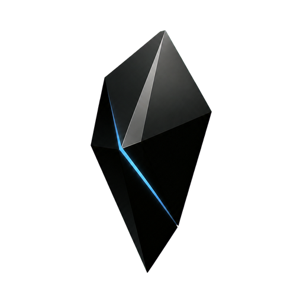

You run the server
Blackglass Server stores accounts, encrypted revisions, attachments, sharing state, and history in a portable data directory built around SQLite.

Blackglass Docs GitHubSelf-hosted desktop Sync
Blackglass lets a supported Obsidian desktop installation use a server you control—while preserving the qualified Sync flow and native application experience.
Desktop first · Apple Silicon macOS client · Linux server on amd64 or arm64
The basic idea
It is an open self-hosting platform for the Sync connection between a supported Obsidian desktop client and its server.
Blackglass Server stores accounts, encrypted revisions, attachments, sharing state, and history in a portable data directory built around SQLite.
Blackglass does not distribute Obsidian. You provide your legitimate official DMG or installed application on your own Mac.
The Bridge checks the exact release, changes only reviewed local connection points, and creates an independently named Blackglass.app.
Blackglass does not guess that every Obsidian release works. A client and server combination is supported only after the complete conformance suite passes for that exact renderer, Bridge revision, Server revision, operating system, and architecture.
Open the compatibility matrix →Before you begin
You do not need to be a software developer. You do need a server, a domain, and comfort following terminal instructions—or an AI coding agent that can do so with your approval.
A Linux server with an amd64 or arm64 CPU, Git, Docker Engine, and Docker Compose.
Two DNS names such as sync.example.com and sync-data.example.com.
Ports 80 and 443 reaching the server so Caddy can obtain and renew TLS certificates.
An Apple Silicon Mac and your own supported official Obsidian DMG or installation.
A backup destination outside the server, with enough space for your encrypted vault data.
The exact release versions listed in the compatibility matrix. Do not substitute “close enough” versions.
Walkthrough 01
This is the simplest production path: one Linux host, Docker Compose, Caddy for HTTPS, and one portable Blackglass data volume.
Create two DNS records. The control name carries sign-in and vault-management requests. The data name carries the live encrypted Sync connection.
sync.example.com→Your server IPsync-data.example.com→Your server IPChoose a version from GitHub Releases, then check out that exact tag instead of deploying an arbitrary moving branch.
git clone https://github.com/mergebloom/blackglass-server.git
cd blackglass-server
git checkout vVERSIONReplace VERSION with the exact published Server version required by the compatibility matrix.
Copy the example configuration, protect it from other local users, then replace every example value. Pin the Server image to a published version or immutable digest.
cp .env.example .env
chmod 0600 .env
${EDITOR:-vi} .env
./ops/compose-ops.sh configBLACKGLASS_SERVER_IMAGEPublished image tag or digest
BLACKGLASS_CONTROL_DOMAINYour control DNS name
BLACKGLASS_DATA_DOMAINYour data DNS name
BLACKGLASS_ACME_EMAILEmail used for TLS certificate notices
The password is read privately from standard input. It is not placed in your shell history or a process argument.
read -r -s BLACKGLASS_INITIAL_PASSWORD
printf '%s\n' "$BLACKGLASS_INITIAL_PASSWORD" | \
./ops/compose-ops.sh init owner@example.com 'Vault owner'
unset BLACKGLASS_INITIAL_PASSWORD
./ops/compose-ops.sh up
./ops/compose-ops.sh health✓ A successful health check means the Server and its SQLite database are ready.
Do this before adding valuable data. Store the resulting database and adjacent checksum off the server.
./ops/compose-ops.sh backup /safe/off-host/blackglass.sqlite
./ops/compose-ops.sh verify-backup /safe/off-host/blackglass.sqlite
./ops/compose-ops.sh restore-drill /safe/off-host/blackglass.sqliteNever copy a live SQLite, WAL, and SHM file set independently. Use the built-in online backup command.
Walkthrough 02
The Bridge runs locally on your Mac. It verifies your official Obsidian input and creates the independently named application without changing your installed Obsidian app.
Download a legitimate official Obsidian DMG yourself, and make sure its exact renderer version is listed as supported. Blackglass releases never include Obsidian binaries, ASAR files, source, or proprietary assets.
Get the Apple Silicon standalone executable and its adjacent checksum from the Bridge release required by the compatibility matrix.
shasum -a 256 -c blackglass-bridge-vVERSION-macos-arm64.sha256
chmod 0755 blackglass-bridge-vVERSION-macos-arm64Use the same control and data names configured on the Server. The control endpoint includes https://; the data host does not.
./blackglass-bridge-vVERSION-macos-arm64 adapt \
--dmg /path/to/Obsidian-VERSION.dmg \
--control-origin https://sync.example.com \
--data-host sync-data.example.com \
--output "$HOME/Desktop/Blackglass-output"The output directory contains Blackglass.app, a release manifest, and a packaging receipt. Quit ordinary Obsidian before opening Blackglass.
Use the account created on your Server. Create or connect a remote vault from the native Sync interface, choose custom-password E2EE or managed encryption, and confirm a test note appears on another clean profile before moving important data.
Guided with an AI agent
Paste one prompt into Codex or another capable coding agent that has terminal access. Replace the bracketed values first. Keep passwords, tokens, private keys, and vault data out of chat.
You are helping me deploy Blackglass Server on a Linux host I control.
Authoritative repository:
https://github.com/mergebloom/blackglass-server
My deployment details:
- Server OS: [UBUNTU/DEBIAN/OTHER]
- CPU architecture: [AMD64/ARM64]
- Control domain: [SYNC.EXAMPLE.COM]
- Data domain: [SYNC-DATA.EXAMPLE.COM]
- Account email: [OWNER@EXAMPLE.COM]
- Off-host backup directory: [PATH]
Use the repository's production Docker Compose path and an exact published release. Read the current README, .env.example, compose.yaml, and docs/production.md before changing anything. Verify release identity and checksums. Do not invent configuration keys, use a moving image tag, weaken TLS, use wildcard CORS, or expose the plaintext Server listeners publicly.
First inspect the host, DNS readiness, open ports, Docker/Compose availability, existing services on ports 80/443, disk space, and CPU architecture. Then show me a short plan and identify every value I must choose. Pause for my approval before changing DNS, firewall rules, public listeners, accounts, or existing services.
During setup:
1. Check out the exact selected release.
2. Create a mode-0600 .env from the example using my two domains and a pinned Server image.
3. Validate the Compose configuration.
4. Create the first account with the password read from standard input. Never ask me to paste the password into chat, save it in shell history, or pass it as a command argument.
5. Start the service and verify health and TLS for both domains.
6. Create a verified online backup and perform a restore drill into disposable state.
7. Report the exact release, image digest, domains, health result, backup paths, and any remaining operational work.
Stop and explain if the repository instructions, release metadata, DNS, architecture, or host state do not match. Do not bypass a safety or compatibility gate.You are helping me create Blackglass.app from an official Obsidian installation that I legitimately supplied.
Authoritative repository:
https://github.com/mergebloom/blackglass-bridge
My inputs:
- Mac: Apple Silicon
- Official Obsidian DMG or app: [ABSOLUTE PATH]
- Control origin: https://[SYNC.EXAMPLE.COM]
- Data host: [SYNC-DATA.EXAMPLE.COM]
- Output directory: [ABSOLUTE PATH]
Read the current README, compatibility/MATRIX.md, and docs/bridge-cli.md first. Determine the exact renderer and wrapper versions from my supplied artifact and confirm that the complete Bridge/Server/client combination is supported. Select the exact published Bridge release named by that support record and verify its checksum.
Use only the official standalone Bridge workflow. Do not extract or commit proprietary source, redistribute Obsidian, modify my installed Obsidian application, weaken artifact verification, bypass an incision mismatch, or silently claim an unqualified release works. Quit conflicting Obsidian or older Blackglass processes safely before adaptation.
Run the adapt command with my exact control origin and data host. Verify that the output contains Blackglass.app, the release manifest, and the packaging receipt; that its visible application name is Blackglass; that it uses the Black Prism icon and isolated profile; and that upstream renderer updates are disabled. Do not publish or upload the locally generated app or adapted renderer.
Finally, launch the packaged application, confirm it remains open without a crash, and give me the exact output paths, versions, hashes, endpoint identities, and any limitations. Stop rather than guessing if any source hash, semantic anchor, protocol shape, package identity, or compatibility check differs.You are helping me safely upgrade an existing Blackglass deployment.
Repositories:
- https://github.com/mergebloom/blackglass-server
- https://github.com/mergebloom/blackglass-bridge
Current deployment:
- Server version and digest: [VALUE]
- Bridge version: [VALUE]
- Obsidian renderer version: [VALUE]
- Server architecture: [AMD64/ARM64]
- Existing control and data domains: [VALUES]
Target versions: [VALUES OR "DETERMINE FROM CURRENT QUALIFIED MATRIX"]
Read both release notes, the compatibility matrix, release contracts, Server production upgrade/rollback instructions, and Bridge client guide. Confirm the exact target combination is fully qualified before making changes. Inspect the current deployment and preserve unrelated configuration.
Before upgrading, create and verify an online off-host backup and complete a restore drill. Record the current image digest, database schema, source revisions, client artifact identities, and rollback boundary. Explain whether rollback is allowed by the exact release contract.
Upgrade in the documented order, verify Server health and TLS, then create a newly adapted Blackglass.app from my user-supplied supported official Obsidian artifact. Do not carry forward an old compatibility claim, reuse stale partial outputs, weaken a source/artifact binding, or modify historical qualification evidence.
Run the relevant packaged-client checks and a small real Sync test with a note plus attachment. Report exact versions, commits, artifact hashes, backup identity, health results, compatibility result, and rollback instructions. Stop before any destructive migration or unsupported version.You are qualifying a new user-supplied official Obsidian release for Blackglass. Work in the existing blackglass-bridge and blackglass-server repositories and follow blackglass-bridge/.agents/skills/qualify-obsidian-release/SKILL.md exactly.
New official artifact: [ABSOLUTE PATH TO DMG]
Candidate renderer version: [VERSION]
Control origin for qualification: https://sync-control.example.com
Data host for qualification: sync-data.example.com
Begin read-only. Verify artifact provenance and identities, compare the wrapper, renderer, CLI, code inventory, protocol routes, WebSocket shapes, and every semantic incision with the previous reviewed baseline. Produce an untrusted candidate first and require explicit review for every changed or new incision.
Do not store or commit extracted/minified proprietary source or assets. Do not modify historical validation records. Do not mark the release supported from static analysis or unit tests alone.
After review, run fast checks, full protocol and packaging checks, two independent reproducible Blackglass.app builds, and the full packaged-client E2E matrix: tenancy/isolation, custom E2EE collaboration, managed-encryption collaboration, background bidirectional Sync, mixed files, deletion, restart continuity, backup/restore/migration, and clean-profile recovery. Bind all evidence to exact Bridge and Server revisions and redact secrets.
Only update the machine-readable and human-readable compatibility matrix if every required scenario passes. Finish with exact commits, versions, hashes, validation records, known limitations, and deferred work. Stop and explain any mismatch instead of weakening a gate.Keep it healthy
Self-hosting means you own recovery as well as storage. These habits matter more than clever infrastructure.
Check service readiness, restarts, sign-in failures, SQLite contention, and free storage. The optional admin console is read-only and loopback-only.
Use the online backup command, keep its checksum, encrypt the destination, and send it to a different failure domain.
A backup is only useful if it restores. Run the supplied restore drill on a schedule and before every upgrade.
Pin versions and digests. Confirm schema migration and rollback rules. Rebuild the client for an exactly qualified renderer.
Common questions
No. Blackglass Server replaces the hosted Sync service for qualified flows. Blackglass Bridge adapts an official desktop installation that you supply. The editor and its native UX remain the third-party Obsidian application.
No. Public releases contain the open Bridge tool, not Obsidian or a pre-adapted client. You create Blackglass.app locally from your own legitimate supported installation.
No. Use only exact combinations marked supported in the compatibility matrix. The Bridge fails closed when an upstream artifact or reviewed semantic anchor differs.
Not in the current claimed scope. The initial client is Apple Silicon macOS. Linux amd64 and arm64 are supported for the Server.
With custom-password E2EE, the vault password never reaches the Server. Managed encryption is easier to recover but stores its generated recovery password in SQLite and backups. Choose the mode that matches your trust boundary.
Blackglass code sends no telemetry and requires no Blackglass-operated service. Obsidian, plugins, embeds, Help, and other upstream features are outside Blackglass's network boundary.